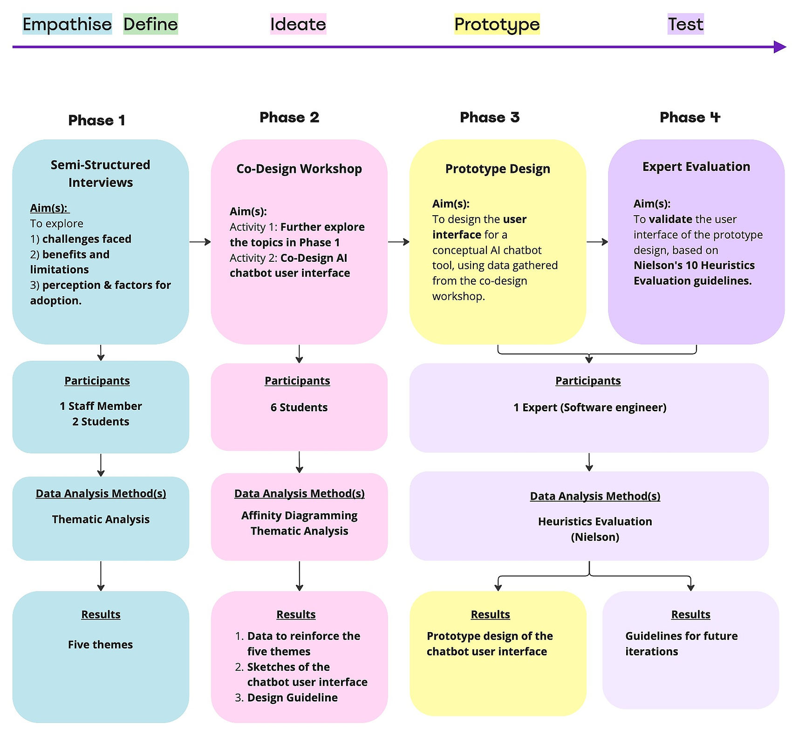
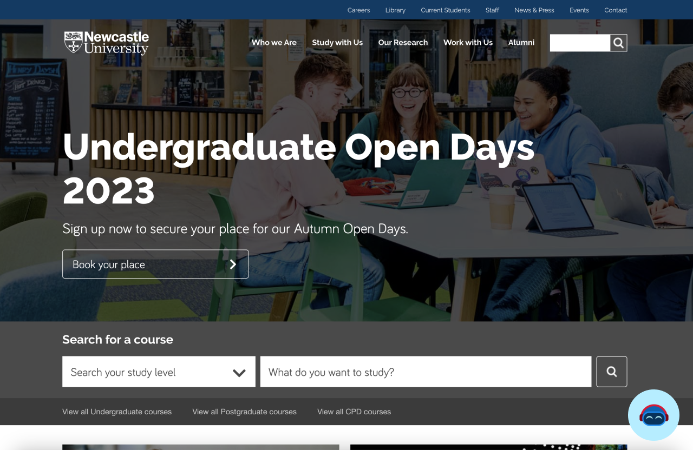
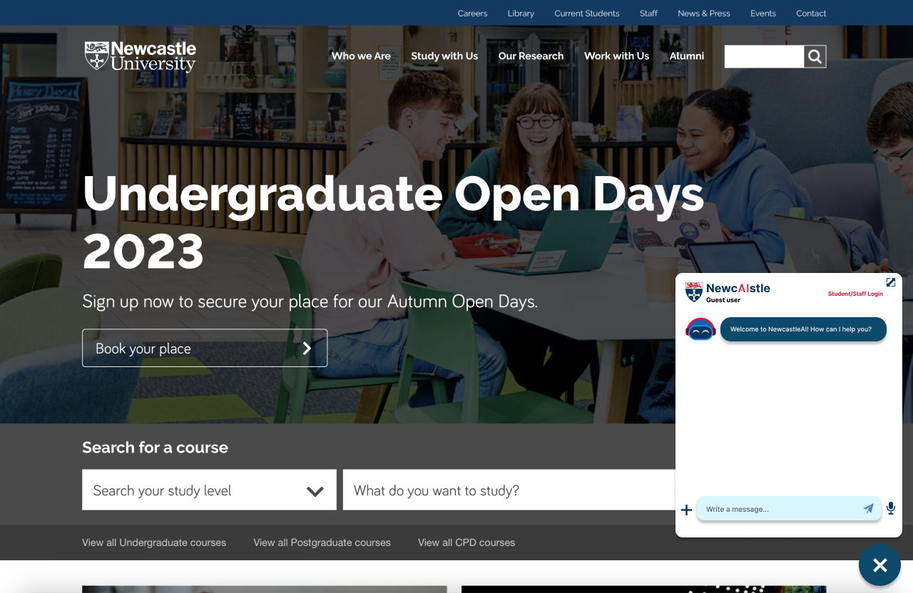
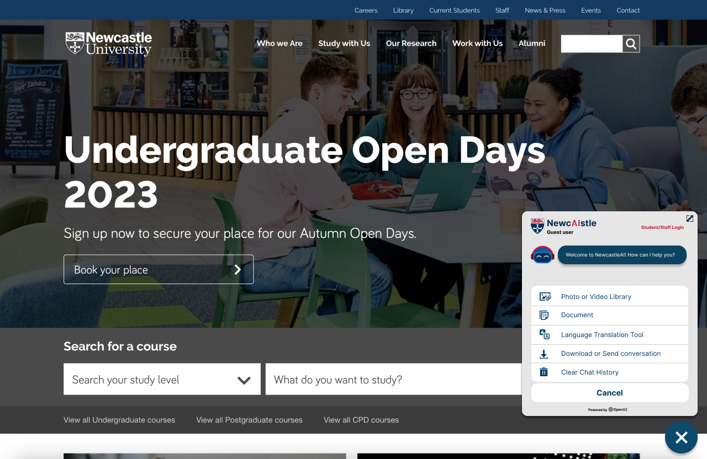
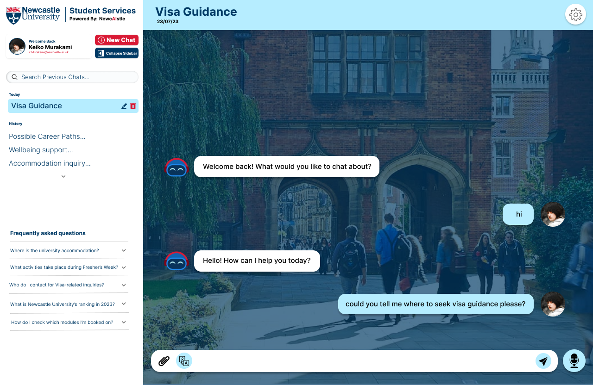

Overview
This project followed a multi-phase HCI research approach, blending qualitative insights with co-design and expert feedback. With a timeline of under three months, each phase built upon the last—ensuring that the final solution was both user-centered and technically grounded.
Below is an overview of the research process.

Phase 1: Semi-Structured Interviews
Qualitative interviews were conducted with 2 students and 1 staff member. Each 45–60-minute session explored challenges and the potential of AI tools. Data was analysed using Braun and Clarke’s thematic analysis, resulting in five central themes.

Persona Development
Based on interview insights, two personas—Alex (student) and Sarah (staff)—were created to guide the next stages. Their user stories helped shape feature ideation and AI use case discussions.


Phase 2: Co-Design Workshop
The workshop lasted 90 minutes and included six students. It featured two activities, the first being Empathizing with Personas, where participants explored persona pain points, identified opportunities, and proposed features for an AI tool designed to meet their needs.

Results
Activity 1 in the co-design workshop validated Phase 1 findings from the interviews, reinforcing the 5 central themes. These insights were synthesized into a chart, providing empirical data for the research.

User Journey Map
Although not part of the final report due to time constraints, I created a user journey map, flow, and storyboard to better illustrate Alex’s experience with the AI chatbot. These visual aids clarify key touchpoints, pain points, and interaction steps, enhancing understanding of the user’s goals and actions.
Persona: Alex
Goal: To learn how to register for the Language Resource Centre and find part-time work opportunities.

User Flow

Storyboard

Co-Designing the AI Chatbot Prototype
In the next part of the co-design workshop, participants were given a Design Brief and guided to sketch a preliminary concept for an AI chatbot. Reference examples were shared to support and inspire their ideas.

Phase 3: Prototype Design
Using the sketches and the list of features derived from the co-design workshop, I constructed a mockup of the envisioned AI chatbot tool, using the Figma software.
To ensure contextual alignment, I incorporated a screenshot of Newcastle University's landing page into the mockup.



I also designed an expanded version of the AI chatbot tool that would take up the full screen, tailored for current users within the university system, such as existing students and staff members.


Phase 4: Expert Evaluation
To validate the design, I applied Jakob Nielsen's 10 Usability Heuristics and conducted an evaluation with an industry expert—a seasoned software engineer based in Southeast Asia, well-versed in both heuristics and UX design.
The assessment took place over a Zoom call, where I provided access to my Figma prototype for review. Additionally, I shared a user-friendly, fillable form based on the Heuristics Guidelines template to streamline feedback collection.
Results
The Heuristic Evaluation revealed valuable usability insights, highlighting key areas for improvement to enhance system usability and user experience.